A special Agent Modeling Perspective can be used to setup your Workspace for modeling. Dependening on your installtion of the agent modeling tools, you can simply pick the perspective from the choices in the upper-right hand of your workbench:
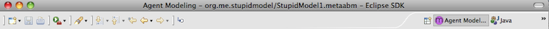
Or, if you can't see it there, you can access it by selecting the mene '''Open Perspective > Other... and selecting the Agent Modeling persspective from the provided options:
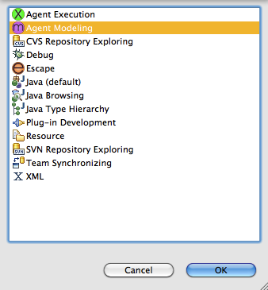
Before doing anything else, we need a project -- a folder to organize our models within. Right-click in the Package Explorer and select New > Agent Modeling Escape Project.
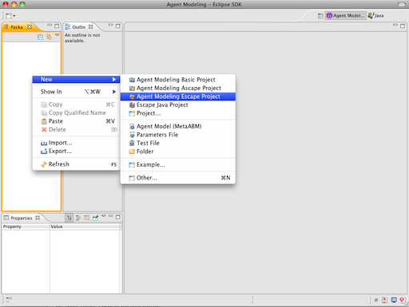
We'll get a dialog allowing us to name the project. Let's call it something simple.
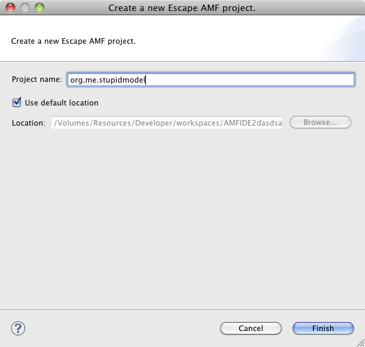
We'll need a model as well. This is the container for all of the the agents and behaviors we'll be defining. Right-click on the project folder and choose New > Agent Model.

You'll see a model creation wizard from which you can name the model. Just give it the name "StupidModel.metaabm".
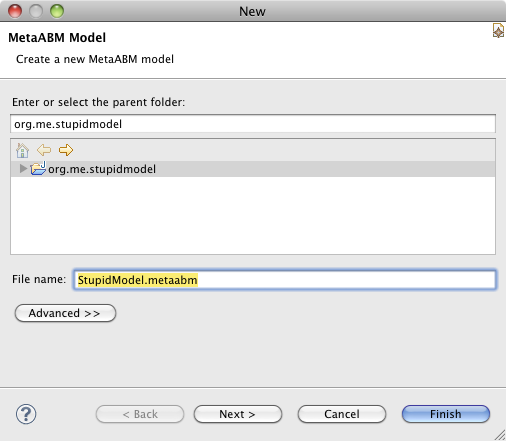
Click Next to see some other options. We don't need to change any of this:
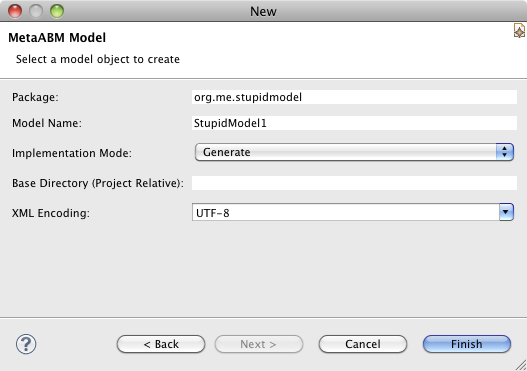
So just click the Finish button and we're ready to move on with the tutorial.
Our first step is to create an agent. The root contexts and a number of neccessary model components were already created automatically. So right-click on the root "StupidModel1" context and select Create Member > Agent.

Let's call it "Bug". In the lower left-hand corner you should see the Properties View. This is where you'll edit model values when working with the tree editor. The properties view -- as with any other view--- can be moved anywhere within the workbench and if you can't find it -- or any other views -- you can always lcoate it through Window > Show View > Other. Find the "Label" property and type our new name into it. You'll see that all of the related name properites are also updated.
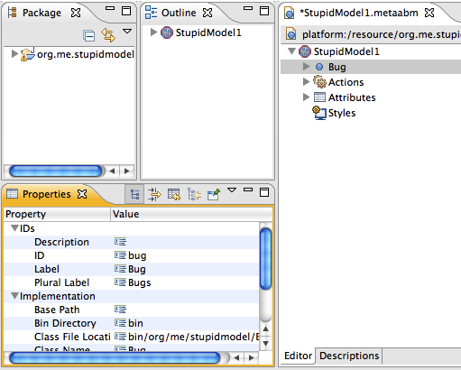
While we've been making these changes, the modeling framework has also been doing some work behind the scenes. For example, it has created an attribute and a rule to create the agents. Open the Actions node and the Attributes node to see these changes. If we look at the attributes for the model, we can see that an attribute specifying the number of agents has been created called "Bug Count". Select it, then enter "100" as the default value. The default value is the value the model will use if no value is specified anywhere else (like in the parameter launcher).
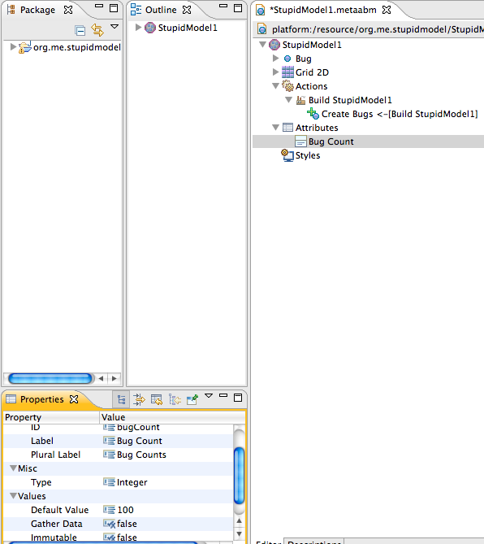
You might want to take a look at the Create Bugs rule, but there isn't anything we need to change there.
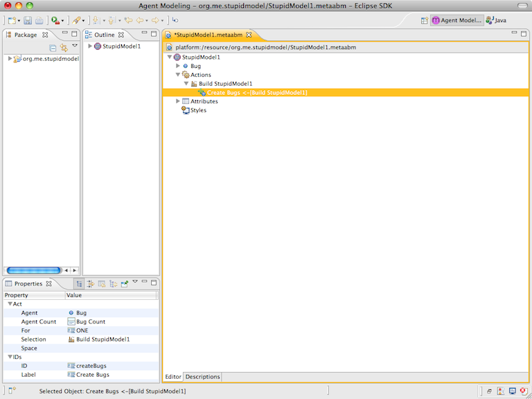
Next, we'll create a grid for the Bugs to move around upon. Right-click on the StupidModel1 context and choose New > Grid.
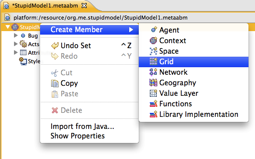
Now, looking at the properties for the Grid we've just created, we can see that there are a number of properties to set. We want to make a number of changes.
-
Set the space's "Border Rule" property to be "Periodic" -- the edges wrap around from one ege to the other.
-
Set the "Neighborhood" property to be "Moore" -- that's how we are going to interpret the statement "in the X and Y directions".
-
Set the dimenionality to "2". (You might need to enlarge the Property view or use the scroll bar to see the Dimensionality property.)
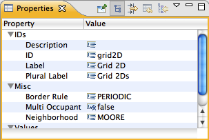
Again, the framework has taken care of some thigns for us automatically. If we now open the Grid node, we can see that "Width" and "Height" attributes have been created based on the dimensionality we've just defined. We'll set each of them to "100", so that we end up with a 100 x 100 grid. (Which is pretty large for a model of this kind, but we want to go with the basic specification.)
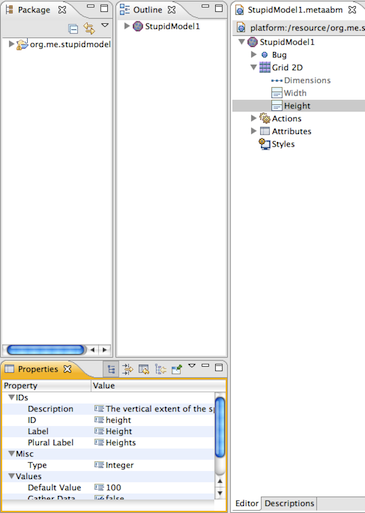
We need to do one other thing to set up the structure. The editor has created behaviors (we call them "Actions") for creating agents, but we need to create an Act to build the grid Habitat members and make it a hospitable (or at least known) space for our bugs. So right-click to create a new Build Grid Act within the <i>Build Stupid Model</i> node within <i>Simple Agent's</i> Actions. (You may need to expand some nodes to get there.)
So, select "Grid 2D" (the only choice) from the Space property.
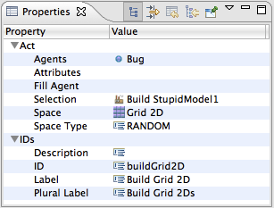
Then click the ... button next to the "Agents" property and add the Bug agent we created abovve to the Feature list in the dialog.
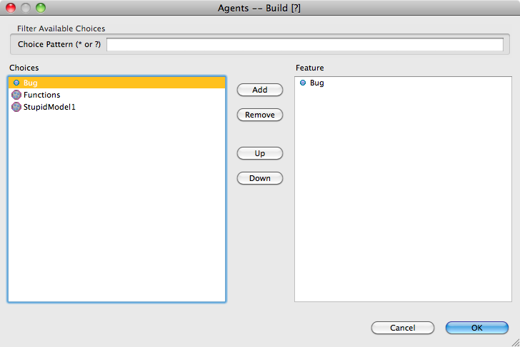
Now we can make these bugs do something. Let's create our first rule. In this case we're going to create a special Initialize Action that executes once when the model is first created for each agent. All Actions begin from the agent (or style) Actions list and there are only a few Actions that can serve as roots. See the Design section of this guide for much more on that. Open the Bug node by clicking the triangle icon, right-click on the Actions node and select the '''Create Member > Initialize Action.
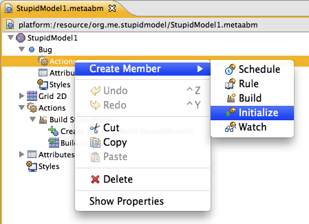
Next, right click on the new Initialize node and choose Create Member > Select to create a Select target.
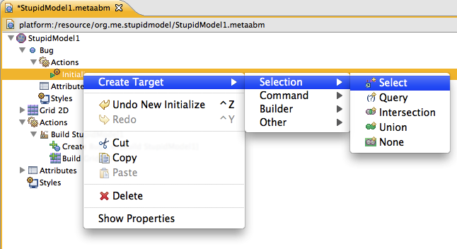
Selects are the central building blocks of model actions and define the basis for Query and Logic Actions that can be modified and used in subsequent targets. Targets are actions that "follow from" other actions. With this Select we are going to be searching for places for the Bug to move to at the very start of the model run. Here we just need to specify the space we will be looking for cells within, so we set the Space property to "Grid 2D". (Normally, we'd specify an agent as well, but as the Grid 2D cells don't have any attributes, we don't need to define them explicitly. In more complex models, we would.)

Next, we create a Query Action. A query is really a query term; we're specifying some aspect of the search that we're interested in.
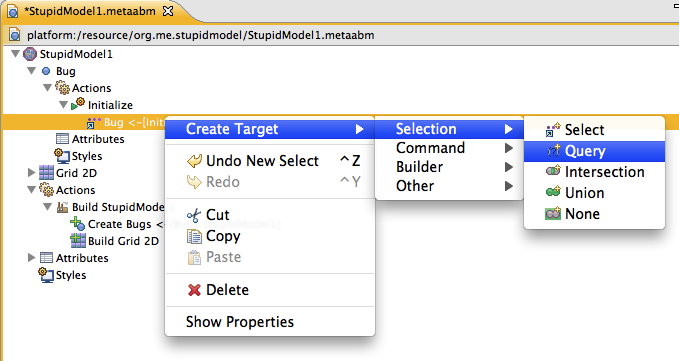
In this case we want a special kind of query, a query within space for any agents that are available; that is unoccupied by another agent. So we select "Spatial: Available" form the drop down list of query functions.
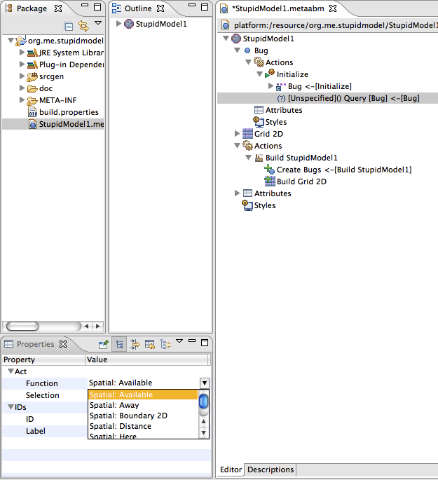
Finally, as the last part of the initial action specification, we'll create a Move Action using Create Member > Move. (Not shown.) The properties should be correct, but check to make sure that the selection property is "Initialize" (the root), and the destination property is "Bug" (the Select Action we've defined above). Like this:
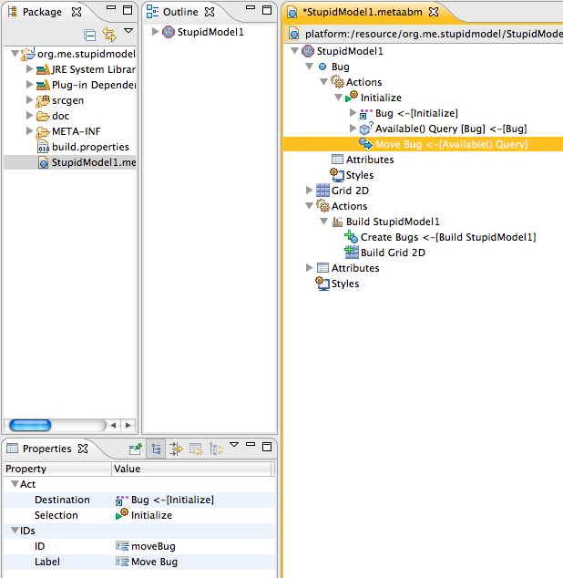